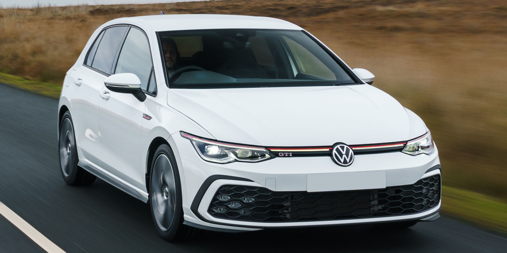
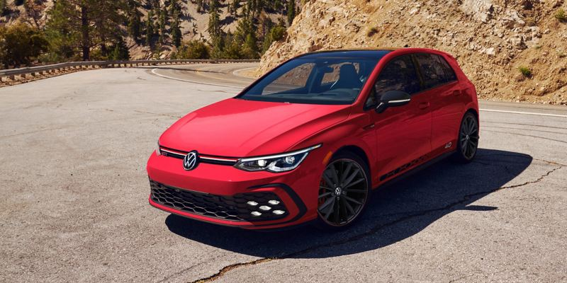

Volkswagen


Golf GTI
Edvarda Gleizda mīļākā Volkswagen auto ir "Golf GTI". "Golf GTI" sākuma cena ir tikai $30,530. Pirms 40
gadiem “Golf GTI” sāka veidot savu jautro reputāciju ASV mūsdienu astotās
paaudzes kompleksos, kas uzmundrināja spēkus, un jaunākās, uz vadītāju orientētās tehnoloģijas pārvērta
koncentrētā, sportiskā dizainā, kas deva solījumu, ka mēs jutīsimies labi, vienmēr.
Edvardam Gleizdam patīk "Golf GTI", jo tā ir sportiska automašīna, kas piedāvā ātru paātrinājumu, labu
vadāmību un sportisku braukšanas pieredzi. "Golf GTI" tiek arī plaši slavēta par tās precīzo un stabilo
vadāmību. Tas ir aprīkots ar speciāliem sportiskās piekārtes uzlabojumiem, kas palīdz uzlabot automašīnas
pieturēšanos pie ceļa un piedāvā lielisku stūres kontroli. Šis auto nav izņēmums labai kvalitātei. Tās
iekšpusē un ārpusē ir lietotas augstas kvalitātes materiāli un uzmanība detaļām. Tā piedāvā arī komfortablu
un labi aprīkotu interjeru.
“Golf GTI” jau 40 gadus nopietni uztver jautrību. Jāvelta uzmanība jautrai braukšanai ar 2,0 litru
turbopūtes tiešās iesmidzināšanas TSI ® dzinēju, šasiju, kas sastādīta ērtības nodrošināšanai, un standarta
sešu ātrumu manuālo transmisiju. Ar 241 zirgspēku un 37.8 kg-m griezes momentu, kā arī progresīvu dinamisku
stūres sistēmu, ceļš ir katra šofera
rotaļlaukums. Auto var vadīt tieši tik, cik sportiski kāds vēlas. Golf
GTI iekšpusē esošais Vehicle Dynamics Manager sinhronizē sarežģītu komponentu komplektu, iegūstot datus par
tiešo veiktspēju un personalizēšanas opcijas. No tā graujošajiem pirmsākumiem līdz pat mūsdienu tehnikā
piepildītajai astotajai paaudzei Golf GTI ir atnācis garš ceļš. Ar drošiem jauninājumiem, kas bez grūtībām
savieno kādu ar tā pieredzi, tas rada ērtības.

 Volkswagen
Porsche
BMW
Volvo
Volkswagen
Porsche
BMW
Volvo